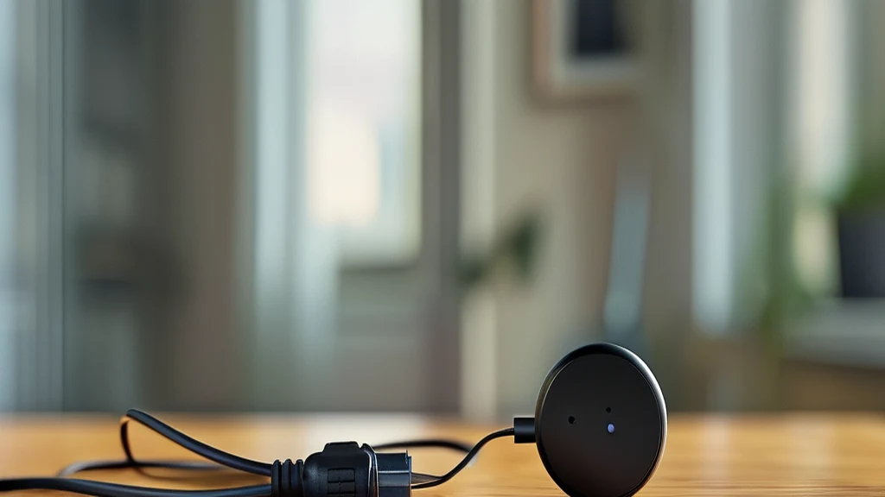
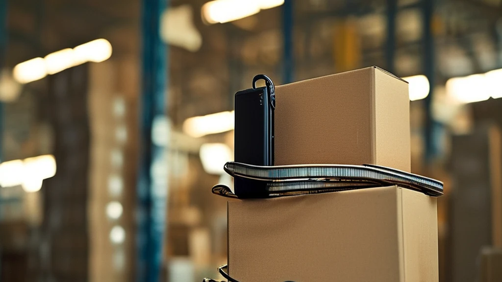
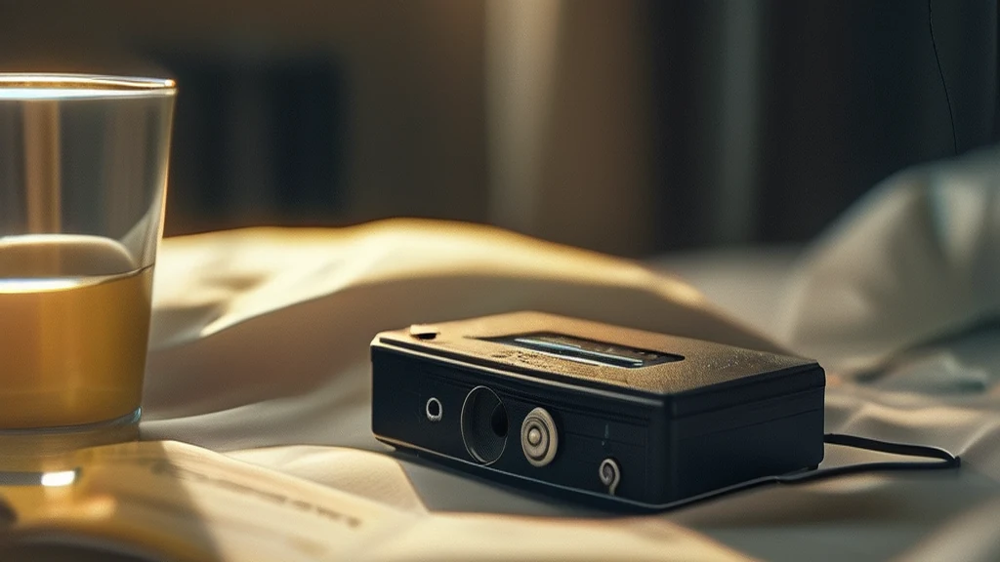
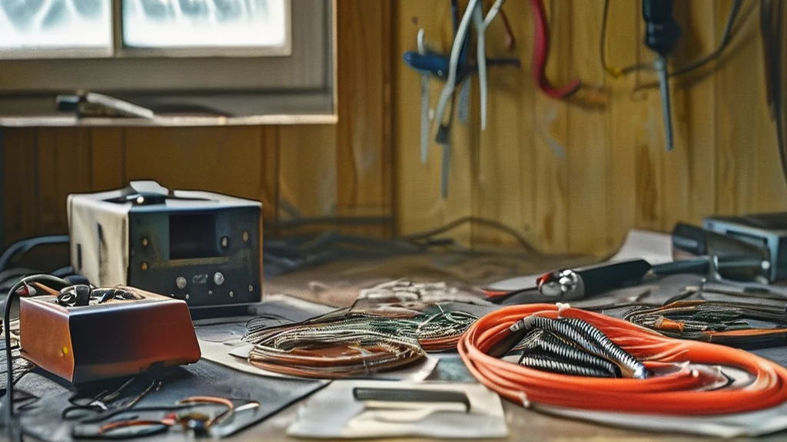
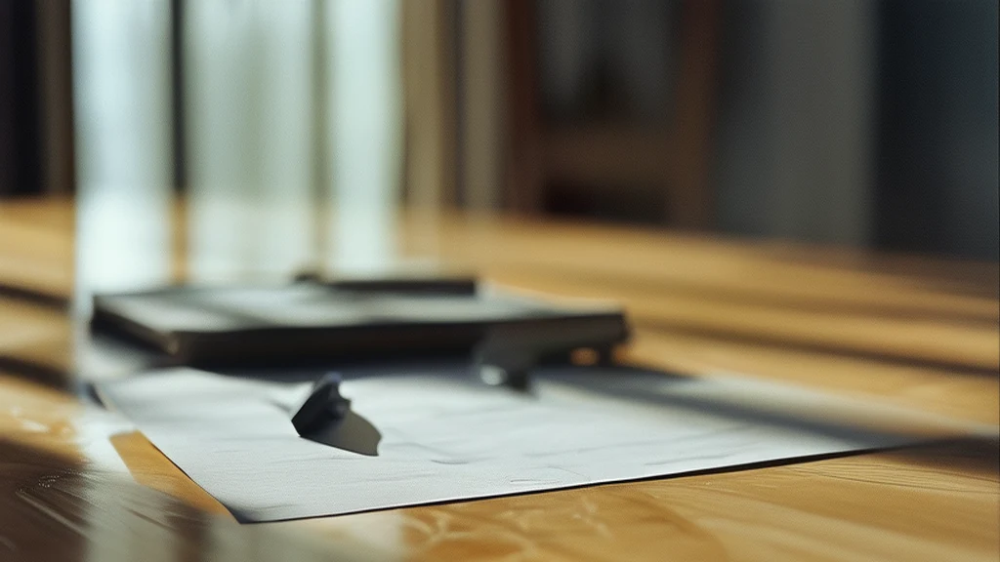

圖片由 AI輔助創作Image by AI
【鄭哥點評】欄目：鄭哥博客點評｜日期：2026-11-21
今日合格素材只有一條，但這一條把 AI 硬件最難的兩件事講全了：怎麼冷啟動，以及賣出之後靠什麼收錢。鄒皓的 Echo 只做一枚 8 克的拾音器，300 台十餘天賣光，靠的不是投放，是留存。

圖片由 AI輔助創作Image by AI
一、8 克拾音器：300 台十餘天自然售罄
2025 年 6 月，從百度離職的鄒皓創辦 Echo。第一款硬件是一枚 8 克重的拾音器，磁吸或掛繩別在胸前，日常隨身拾音，配套 App 在一天結束時自動整理出卡片、待辦事項，以及一篇以第一人稱寫的日記。他給這款產品的定位很直白：先讓 AI 認識用戶。
2026 年 5 月底發布、6 月初開售。沒有發布會，也沒有任何商業投放。首批附帶三個月算力權益的 300 台設備，十餘天內自然售罄；此後在零投流狀態下，靠用戶自發口碑完成冷啟動。截至 11 月，累計銷量數千台。
鄒皓的履歷跟多數 AI 創業者不一樣：中國人民大學中國古典文獻學博士，第一次創業做的是話劇與戲劇教育，之後在金山、智譜、百度擔任 AI 產品經理。聯合創始人是仞雪。
來源：鈦媒體（原創）｜https://www.tmtpost.com/8210472.html

圖片由 AI輔助創作Image by AI
二、第四周留四成：錢在訂閱，不在硬件毛利
比銷量更值得看的是留存。海外同類產品 Limitless Pendant 曾披露的周留存率只有 22%；Echo 團隊披露的數據是，設備激活後第四周留存率穩定在 40% 左右。付費訂閱用戶中，高達 80% 保持白天全天佩戴，日均 8 至 9 小時以上，不少重度用戶在居家辦公與通勤時也讓設備持續在線。
這組數字回答的是「賣完之後怎麼辦」。鄒皓把商業模式講成山姆會員模式：收入建立在用戶持續使用的付費上，而不是硬件銷售毛利。硬件賣一台賺一台，是一次性生意；訂閱要的是佩戴時間和信任，兩者根本不是同一門生意。
隱私邊界是這門訂閱生意的門票。Echo 不保留錄音源文件，聲音轉寫為文本、交給系統處理後立即刪除，無法回聽；沒有授權識別的音源，在系統裡只是「路人一」和「路人二」；機主本人沒有開口參與的對話，大概率被判定為無效事件丟棄；機身上還有一盞刻意調亮的提示燈，提示場景裡所有人設備正在收音。
來源：鈦媒體（原創）｜https://www.tmtpost.com/8210472.html

圖片由 AI輔助創作Image by AI
三、不預設場景：一年重構兩次底層架構
在 Echo 的架構裡，硬件只是傳感器，記憶的主體沉澱在雲端，與形態解耦。團隊一年內完成兩次底層架構重構，按話題拆分的卡片、區分本人與他人聲音、兼顧大局與細節的記憶體系，全部由軟件側迭代出來。形態是吊墜、手錶還是眼鏡，都不太重要。
產品立項時沒有預設具體場景，沒有固定功能，也沒有鎖定單一人群。實際用法比任何產品定義都寬泛：有人用它做每天高密度的工作與人生復盤，有年輕父母在晚上陪孩子讀完繪本後把親子對話生成一張故事卡片，有老師用它做課堂教學評估，有銷售用它寫日報週報。至少六成以上的購買動機偏向生產力與工具屬性。
節奏也刻意放慢：雙 11 沒有參與大促衝量。找上門、想把這套軟件能力嫁接到自家硬件產品的廠商不止一家，團隊現階段的選擇很明確——先把自有軟硬一體的閉環體驗打磨透徹，暫不單獨對外輸出軟件方案。下一代的方向是一個賬號支持多台設備。
來源：鈦媒體（原創）｜https://www.tmtpost.com/8210472.html

圖片由 AI輔助創作Image by AI
四、鄭哥點評：硬件的錢薄，訂閱的錢厚
先講錢被誰賺走。這一門生意，硬件毛利很薄，真正的現金流在訂閱。8 克的拾音器沒有屏幕、沒有多餘交互，物料與開模成本有限，售價減去成本留下的那一截，蓋不住雲端算力與模型迭代的持續投入。所以 Echo 給首批用戶三個月算力權益，本質是用算力買留存數據；等留存站住了，才輪到訂閱收錢。硬件是入口，算力是成本，訂閱是收入，三者不在同一條時間軸上，這是 AI 硬件最容易看錯的地方。
哪一條最值得學：用極簡硬件換長期訂閱，並且用留存曲線而不是銷量來驗證。300 台售罄不說明產品成立，第四周還有四成人在戴，才說明產品成立。哪一條最不值得學：「不預設場景」。這句話放在一個有人、有錢、一年能重構兩次底層架構的團隊裡是先進打法；放在三個人的小團隊裡，它是把產品定義的活全推給模型，然後在第二次重構時發現沒錢。
給一條可執行的判斷：先看第四周留存能不能站上三成，再看硬件毛利是不是只夠覆蓋開模與認證。留存低於三成，訂閱收不上來，這門生意就退化成賣電子配件，賣一台賺一台，賣完就結束；留存站得住，才有資格談複利。佩戴是被動的，付費是主動的，願意留下來付錢的那批人，才是這門生意的底。
圖片由 AI輔助創作Image by AI
\[Zheng Ge's Take\] Column: Zheng Ge's blog commentary | Date: 2026-11-21
Only one item cleared review today, but it covers the two hardest questions in AI hardware: how to start cold, and where the money comes from after the sale. Zou Hao's Echo makes nothing but an eight-gram clip recorder, sold 300 units in under two weeks, and did it without ad spend - on retention.
圖片由 AI輔助創作Image by AI
1. An eight-gram recorder: 300 units sold out in under two weeks
In June 2025 Zou Hao left Baidu and founded Echo. Its first hardware product is an eight-gram voice recorder clipped to the chest by magnet or lanyard; the companion app turns a day of speech into cards, to-dos and a diary written in the first person. His framing is blunt: let the AI get to know the user first.
It launched in late May 2026 and went on sale in early June - no launch event, no paid media. The first 300 units, bundled with three months of compute credits, sold out naturally in a little over ten days, and the cold start continued on word of mouth with zero ad spend. By November cumulative sales had reached several thousand units.
Zou's background is unusual for an AI founder: a doctorate in Chinese classical philology from Renmin University, a first venture in theatre and drama education, then AI product roles at Kingsoft, Zhipu and Baidu. Co-founder Ren Xue.
Source: 鈦媒體（原創） | https://www.tmtpost.com/8210472.html
圖片由 AI輔助創作Image by AI
2. Forty per cent still there in week four: the money is in subscription, not hardware margin
Retention matters more than the sales number. The overseas equivalent, Limitless Pendant, once disclosed weekly retention of only 22 per cent; Echo says its week-four retention after activation holds around 40 per cent. Among paying subscribers, eighty per cent wear the device all day, eight to nine hours or more on average, and heavy users keep it live through home working and commutes.
Those numbers answer the question of what happens after the sale. Zou describes the model as a Sam's Club membership: revenue rests on continued paid use rather than hardware margin. Selling a unit for a one-off profit and running a subscription are not the same business at all.
Privacy is the entry ticket for that subscription. Echo keeps no source audio - speech is transcribed, processed and deleted at once, with no playback. Unrecognised voices appear only as passer-by one and passer-by two; conversations in which the owner never speaks are likely discarded as invalid; and a deliberately bright indicator light tells everyone in the room that it is recording.
Source: 鈦媒體（原創） | https://www.tmtpost.com/8210472.html
圖片由 AI輔助創作Image by AI
3. No preset use case: two ground-up rebuilds in a year
In Echo's architecture the hardware is only a sensor; the memory itself settles in the cloud, decoupled from the form factor. The team rebuilt the underlying architecture twice in a year - topic-split cards, separating the owner's voice from others', and a memory system that holds both the big picture and the detail all came out of software iteration. Whether the shell is a pendant, a watch or glasses matters little.
Nothing was preset at kickoff: no fixed scenario, no fixed feature set, no single target group. Real use turned out wider than any product definition - daily review of high-density work, a young parent turning a bedtime reading into a story card, a teacher assessing a class, a salesperson writing weekly reports. At least sixty per cent of purchases are motivated by productivity and tool use.
The pace was deliberately slow too: Echo sat out the Double 11 promotions. More than one hardware maker has come asking to graft this software onto their own device, and the team's answer is to finish its own closed loop first rather than license the software alone. The next generation supports several devices on one account.
Source: 鈦媒體（原創） | https://www.tmtpost.com/8210472.html
圖片由 AI輔助創作Image by AI
4. My take: thin money in hardware, thick money in subscription
Start with who takes the money. In this business hardware margin is thin and the real cash flow is the subscription. An eight-gram recorder with no screen and no extra controls has limited bill-of-materials and tooling cost, and what is left after cost does not cover the ongoing spend on cloud compute and model iteration. Echo's three months of compute credits for the first buyers is really compute spent buying retention data; only once retention holds does the subscription start paying. The device is the entrance, compute is the cost, subscription is the revenue, and they sit on different timelines, which is where AI hardware is most often misread.
What is worth copying: minimal hardware traded for a long subscription, validated by the retention curve rather than by sales. Selling out 300 units proves nothing; four in ten still wearing it in week four proves the product. What is not worth copying: no preset use case. That line is an advanced play inside a team with people, money and two ground-up rebuilds a year. Inside a three-person team it means handing the whole job of defining the product to the model, then discovering at the second rebuild that the money is gone.
One executable test: first check whether week-four retention clears thirty per cent, then check whether hardware margin covers tooling and certification and little else. Below thirty per cent the subscription never lands and the business degrades into selling electronic accessories, one unit and one margin at a time, until it ends. Above it, compounding becomes a fair conversation. Wearing is passive; paying is active. The people who stay and pay are the floor under this business.